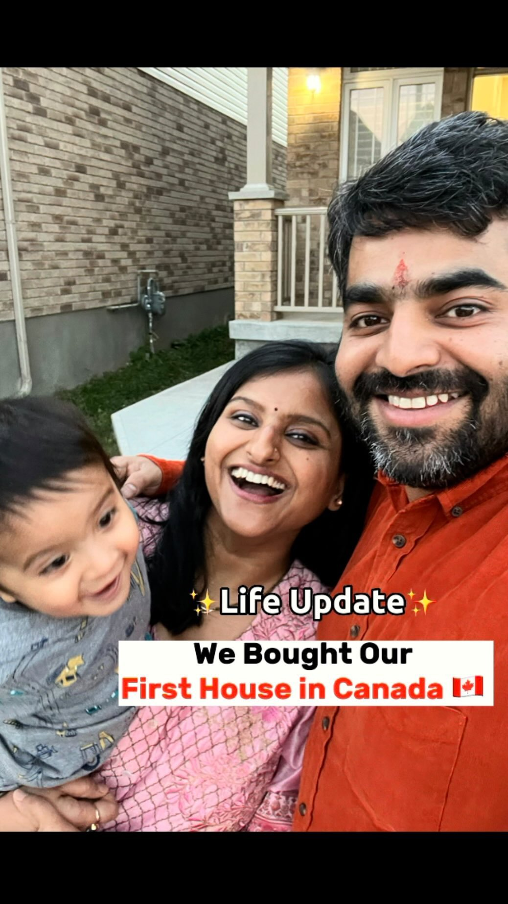
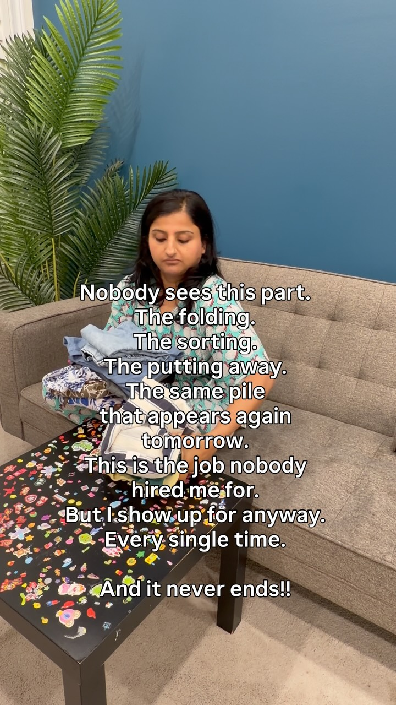

A time-and-distraction system for the corporate mom building a channel in the hours everyone said she didn't have

Real milestones from a real 5 a.m. builder — the proof this works is woven through every chapter
You are not failing because you lack discipline. You have a demanding corporate IT career pulling in a strong six-figure income, two kids under ten, a household to run, and a YouTube channel you keep trying to build in whatever is left over — which, most weeks, is nothing. You've tried waking up early and the snooze button won. You've tried "just being more consistent," and a cousin's engagement party, a Friday night with friends you hadn't seen in months, and a Netflix episode that turned into four all quietly ate the week instead.
This book is not another productivity system built for someone with fewer obligations than you. It's built specifically for a woman balancing a $150K–$200K corporate career, a young family, and a real ambition to build something of her own on camera — and it assumes the four things that keep eating your creator time will keep showing up, because they're not going away: they're the actual shape of your life. Waking up later than planned. Family functions. Time with friends. The pull of the couch and the remote at the end of a long day. The goal was never to eliminate these. It's to stop letting them quietly eliminate the one thing you're trying to build for yourself.
Every real proof-point in this book comes from one account: a Canada-based immigrant mom of two, full corporate life, 107,000+ followers built almost entirely inside hours most people write off as "no time left." Her single most-watched post — 5.4 million views — was filmed in the same kind of stolen morning minutes this book asks of you. The 5 a.m. window isn't about hustle-culture bragging rights. It's the one block of the day your job, your kids, and your calendar haven't claimed yet. Investing fifteen minutes of it in the thing you're building is the entire system.
Here's what's inside:
Read it once straight through. Then treat Chapter 3 as the one you return to every time a specific distraction knocks you off course — because it will, repeatedly, and that's normal, not a sign you're not cut out for this.
Every Sunday night you probably tell yourself this is the week. You'll film that video, post consistently, finally treat the channel like a real second thing instead of a someday thing. By Thursday, it's evaporated again — not because you're lazy, but because nobody ever taught you that "I'll find the time" is a plan that has never once worked for anybody.
You are not choosing Netflix over your channel, or your cousin's baby shower over filming, in some deliberate moment of laziness. You're choosing it because by 8 p.m., after a full corporate workday and an evening of dinner, homework, and bedtime, your brain has one setting left: the path of least resistance. Willpower is a finite resource that gets spent down over the course of a demanding day, and by the time you'd need it to start filming, there's none left in the tank. This isn't a character flaw. It's basic cognitive fatigue, and it happens to every high-performing person carrying this much at once.
The fix isn't "have more willpower." It's never relying on willpower being available at 8 p.m. in the first place — building your content time into a slot in the day where your tank isn't already empty, and removing the decision entirely so there's nothing left to talk yourself out of.
It's tempting to frame this as "corporate job vs. channel" or "family time vs. channel," as if one has to lose. That framing is exactly why so many ambitious moms burn out trying to build a second thing — because it turns every hour with your kids or every family function into something you should feel guilty about, and guilt is not a sustainable fuel source. Your six-figure job is what gives you the financial runway to build something risky and creative without needing it to pay the bills immediately. Your family life is not competing with your channel; it's the actual reason you want to build something you're proud of.
"Our journey from India to Canada" — a 2018 PR application, a COVID delay, landing in 2020, a first house, two kids.
This single origin-story post pulled 9,957 likes and 685K views — proof that the "boring" real story, the one that actually took years of unglamorous grinding through a full-time career and a young family, is exactly what a real audience connects with. Not the highlight reel. The years in between.
The real conflict isn't your job or your family — it's the unprotected, undefended hours in between, where good intentions quietly lose to whatever's easiest in the moment.
Here it is: you don't need more time — you need a small number of specific, defended hours, and a specific job for each one.
Right now, your content-creation time is a vague, undefended idea ("I'll do it when I get a chance"), while your four distractions — waking up late, family functions, friends, TV — are specific, scheduled, and socially reinforced. An undefended vague intention will lose to a specific scheduled thing every single time. Everything in this book exists to convert your content time from a vague hope into something as specific and defended as a work meeting, without asking you to disappear from your family or your job to do it.
Oversleeping isn't really about the alarm clock. It's about your brain, at 6 a.m., doing a cost-benefit calculation between fifteen more minutes of sleep and an ambiguous "get up and work on the channel" — and sleep wins because the channel side of that equation isn't concrete enough to compete.
Generic advice says wake up at 5 a.m. and win the day. That advice assumes you're deciding, in a groggy half-asleep state, to get up and do something undefined and effortful. Your brain will choose sleep almost every time under those conditions — not because you lack discipline, but because vague effort loses to concrete comfort in a fatigued decision-making state. The fix isn't waking up earlier. It's making the thing you'd get up for so small and so specific that it barely counts as a decision at all.
Waking at 5 a.m. isn't the win. What you invest those fifteen minutes into is the win. One idea, written down while it's still dark outside, compounds the same way a 5.4-million-view post compounded: not from one lucky morning, but from a specific small deposit made on an ordinary one, repeated for years before anyone outside your following noticed.
This is designed to survive the mornings you oversleep anyway — which will still happen, and that's fine:
Some mornings you'll wake up with twelve minutes before you need to be logged into a work call. On those mornings, do not skip the wake-up entirely — that's how the whole system quietly dies over a few bad weeks. Do a 90-second version instead: open your notes app and voice-type one sentence of an idea, a hook, or a video title. Ninety seconds. That's the floor under the floor. It sounds too small to matter, and that's exactly why it works — it's small enough to survive your worst mornings, and a system that only works on your best mornings isn't a system.
"Have you seen this side of Canada?" — a small, almost throwaway joke about potholes.
It became the single most-viewed post of the entire account: 142,478 likes, 5,378,055 views. No campaign, no paid boost — just one ordinary post made in the same kind of small, unglamorous window this chapter is asking you to protect. You cannot predict which fifteen-minute deposit compounds. You can only make sure you keep making them.
These three aren't obstacles to eliminate. They're permanent, recurring features of a full life, and trying to will them away is why past attempts at consistency collapsed. Each one needs its own specific rule, not a generic "be more focused" mantra.
In a culture where family gatherings are frequent and attendance is often treated as non-negotiable, saying yes to every function quietly consumes entire weekends, month after month. The rule that works without creating family conflict: you attend fully, or you attend on a fixed exit time, decided before you arrive — never decided in the moment. Before any family function, decide out loud to your partner: "We're staying until 8, then heading home." Committing to the exit time before you walk in the door removes the guilt-driven negotiation that happens once you're already there, three hours in, and being asked to stay "just a little longer."
For functions that aren't close family — extended cousins, acquaintance gatherings — apply a stricter filter: would missing this genuinely damage a relationship that matters to me, or am I attending out of habit and obligation? Not every invitation requires your Saturday. Protecting one weekend day a month for content, guilt-free, requires actually saying no to some of these, and that's allowed.
"Our first house in Canada" — announced the same season family and settling-in obligations were at their peak.
7,802 likes, 218,768 views. The milestones that matter most to your family — a house, a move, a kid — are not competing with your content. Documented honestly, they often become your most resonant posts, because your audience is living the same juggle you are.
Frequent one-off coffee catch-ups and dinners with friends, scattered across the week, are what quietly consume your would-be content evenings one at a time — each individually easy to justify, collectively devastating to any weekly rhythm. The fix isn't seeing friends less. It's consolidating: pick one evening a week (or every other week) as your standing social slot, and protect the other weeknights as content-defended by default. When someone suggests a Tuesday dinner and Tuesday isn't your slot, the honest answer that preserves the friendship is simple: "I've got a standing thing on Tuesdays — does Thursday work instead?" People respect a specific competing plan far more than a vague "I'm busy," because a specific plan doesn't feel like a brush-off.
By the time the kids are asleep, the TV remote and your phone are the two lowest-friction options in the house — which is exactly why they win. You don't beat low-friction distractions with willpower; you beat them by making your content time equally low-friction and making the distraction slightly harder to fall into by accident. Two concrete moves: keep your filming setup (ring light, phone tripod, script notes) already assembled in a visible spot rather than packed away, so starting requires zero setup — and put the TV remote in a drawer instead of on the coffee table, so turning it on requires a conscious choice instead of a reflex. Small, but the data on habit formation is consistent: friction differences this small reliably change which option wins at the end of an exhausted day.
"We were waiting for the right time & here we announce it" — a second-child announcement, posted mid-build of the channel.
3,672 likes, 146,321 views. A second baby did not end the channel. It changed the ledger — fewer evenings, more family functions, less social bandwidth — and the system simply absorbed it, because the system was never built assuming an easy, distraction-free life in the first place.
You don't have time to "figure out what to post" every single day. You need one weekly ritual that turns a scattered list of maybe-someday ideas into a specific, already-decided plan for the week — done once, on autopilot, not re-decided daily.
Same time every Sunday, four steps:
Because your content time is scarce and hard-won, it matters enormously what you spend it on. A useful case study: this same Canada-based parenting and lifestyle account, over 100,000 followers, five years of posts reviewed in full — a clear pattern held up consistently: practical, "save this for later" tip content (packing lists, money-saving tips, meal-prep routines) reliably outperformed generic trending-audio meme content by two to three times the engagement, even though the meme format is easier and faster to produce.
"Every new immigrant coming from India is curious about this, so were we. Hope this helps."
A single practical hack, reposted from an earlier viral original, still pulled 37,285 likes and 1,892,492 views a year later. Evergreen, useful, "save this" content keeps earning long after a trend-chasing post is forgotten — the exact format this chapter tells you to default to.
The lesson for you: with limited weekly content time, default to the practical-tip format over generic trends — it's not just easier to plan (Chapter 4, step 2 becomes trivial once you're mining your own IT/corporate-career expertise for tips), it's also the format most likely to actually work.
The Sunday planning session is just as vulnerable to family functions and social plans as any other slot — protect it the same way: tell your partner or family in advance that Sunday evenings, 7:00–7:20, is your planning time, the same way you'd protect a recurring work meeting. A ritual that isn't itself defended will get skipped the first busy Sunday, and a skipped planning session is usually what causes an entire week to quietly fall apart.
You are not in a position to treat the channel like it's your job yet, and pretending otherwise is how ambitious people quietly sabotage the stable income that's funding their runway to build it in the first place. This chapter is about the boundary that keeps both alive.
Content work happens only in the specific windows you've defended — the morning wake-up slot, the weekly sprint evening — and never bleeds into work hours, no matter how tempting it is to sneak in an edit during a slow afternoon. This isn't about ethics alone; it's strategic. The moment your employer or your own performance at work shows signs of your attention being split, you put the actual financial foundation of this whole project at risk. A dip in your corporate performance is a far bigger threat to your channel's long-term survival than one missed week of posting.
Here's the advantage almost nobody in the generic "family lifestyle" content space has: years of real corporate IT experience most creators in your niche don't have. Career advice, workplace navigation as an immigrant professional, practical tech-industry tips — this is genuinely differentiated content you can create faster than almost anyone else, because you're not researching it, you're recalling it. Lean into content where your day job is the unfair advantage, not the obstacle — it collapses your research time to near zero and gives you an angle most parenting/lifestyle accounts in your space simply can't compete with.
A sponsored partnership with a national bank's student GIC program for newcomers — years after the account started as a side project around a full-time job.
50,877 likes, 2,055,293 views. The brand deals didn't arrive by quitting the corporate job to "go all in." They arrived because years of consistent, protected, part-time effort built an audience large and trusted enough that brands came looking. The compartment rule isn't a constraint on ambition — it's what made the ambition survive long enough to pay off.
Some weeks — a product launch, a performance review cycle, a reorg — will legitimately consume everything. On those weeks, don't try to force the full system. Drop to the absolute floor: the 90-second morning voice memo from Chapter 2, nothing else, for as many days as the crunch lasts. The goal during a work crunch isn't progress, it's survival of the habit itself — keeping the thread alive so it's a five-minute restart afterward, not a from-scratch relaunch.
You don't need to run all four systems from day one. Layer them exactly in this order, giving each one a week to become automatic before adding the next.
A launch at work, a big family event, a sick kid — something will knock this over during the 30 days, probably more than once. When it happens, restart in the exact order you built it: morning wake-up first, then the Distraction Ledger, then the Sunday sprint, then the Compartment Rule. Do not try to resurrect all four simultaneously — that's the same all-or-nothing trap that caused every previous attempt to collapse. Rebuilding in layers, one at a time, is both faster and dramatically less demoralizing than trying to relaunch the whole thing at once.

"Nobody sees the work that keeps a home running." — posted after years of building, still folding the same laundry.
This is not a highlight-reel post — 61 likes, a fraction of the viral ones above. It's here on purpose: the system was never about every post going viral. It's about a woman who kept showing up in fifteen-minute windows for years, through a first house, two kids, a full-time career, and every ordinary Tuesday in between where nothing went viral at all.
Before today ends, do exactly one thing: write tomorrow's 15-minute task on a sticky note and put it on your phone charger.
That's the entire first step. Every other system in this book is waiting for whenever you're ready to layer it in — but the whole sprint starts with one sticky note, tomorrow morning, at 5 a.m., and nothing more than that.
Every image in this book is a real, public milestone — not a stock photo of a "someday." The years between them are exactly what fifteen protected minutes a day, compounded, actually looks like.